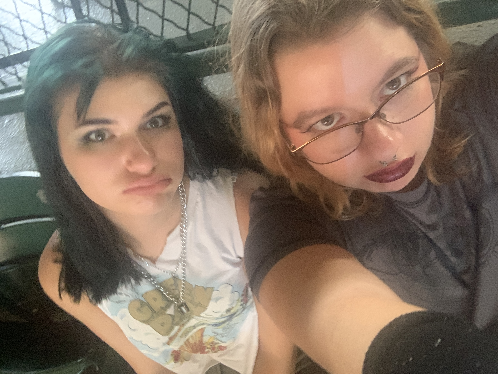
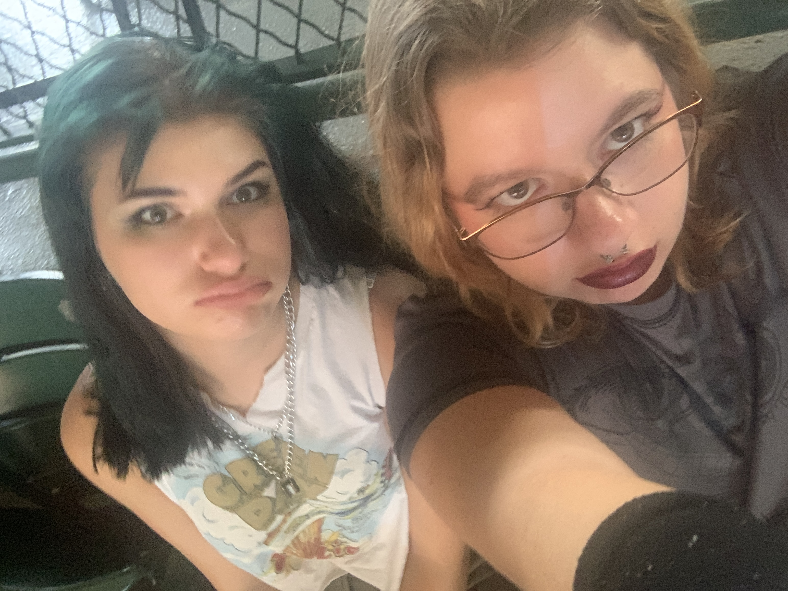

Yungblud
Yungblud is a british pop punk artist. I first started listening to his music in 2018 or 2019. A friend of mine invited me to his concert because she thought I would also listen to him, I thought she was talking about the 5 seconds of summer song. I said yes and we got it cleared up in the conversation but she still let me go.
The months leading to the concert I listened to everything he had out at the time, which wasn't much. Yungblud had been my number 1 spotify artist every year since then (surpased by Green Day this year) and I currently own two of his albums on vinyl.
Green Day
I am largely obsessed with Green Day. They have been my second top artist for the past two years and theres about an 80-20 chance I'm listening to them at any given moment. I own over 10 vinyls of their's as I bought their American Idiot 20th aniversary vinyl set box. I dressed up as Billy Joe Armstrong for an easy halloween costume this year.
The band greatly inspires me with there entire discography from their emotional music, like Bobby Sox in the Saviors album, to their political music like the Viva La Gloria. I also got to see them live this summer which was a life long dream.
Green Day
 
